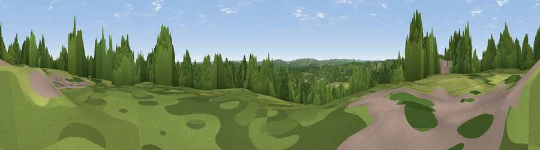

Viewpoint near Flimwell
#41780 in England · top 63% of its area beats it · near FlimwellWhere it is
The exact computed spot (TQ 71775 31075). Click the marker for map links.
The view, rendered

A 360° render of this exact spot computed from the terrain model, tree cover and land cover — summer colours, afternoon light, calibrated against photographs of famous viewpoints. Real trees, hedges and buildings will differ in detail.
The panorama
Grey silhouette: terrain skyline in each direction (720 bearings, Earth curvature and refraction included). Dashed green: skyline with trees (+15 m) and buildings (+8 m) as obstacles. Blue strip: how far the ground is visible on each bearing.
Where the view opens
Wedge length = distance to the farthest visible ground on that bearing (vegetation-aware). Rings at 10, 25 and 50 km.
What fills the view
51% woodland · 42% grassland · 5% cropland · 2% built-up
Angular shares of the visible panorama (visual magnitude), not map area. Landscape diversity 0.42 (0–1 Shannon).
Key numbers
More beautiful places nearby
The staircase of upgrades: each row has a higher view potential than everything closer. Driving times are estimates from straight-line distance, calibrated against real road routing — check an actual route before setting out.
| Place | Direction | Drive | Score |
|---|---|---|---|
| Viewpoint near Flimwell | WNW · 1 km | ~2 min | 26.1 |
| Viewpoint near Kilndown | N · 5 km | ~11 min | 31.2 |
| Viewpoint near Woods Green | WNW · 5 km | ~11 min | 38.1 |
| Blackbush Wood Hill | NNE · 5 km | ~12 min | 40.4 |
| Viewpoint near Woods Green | WNW · 9 km | ~18 min | 44.7 |
| Brightling Obelisk [Brightling Down] | SSW · 11 km | ~21 min | 69.1 |
| Viewpoint near Three Oaks | SSE · 21 km | ~36 min | 69.3 |
| Viewpoint near Guestling Green | SSE · 23 km | ~38 min | 72.2 |
51.05333, 0.44952 · source: screening · position refined by local search. Computed location — check access rights before visiting.